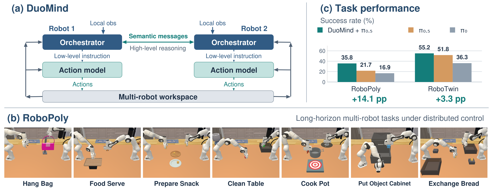
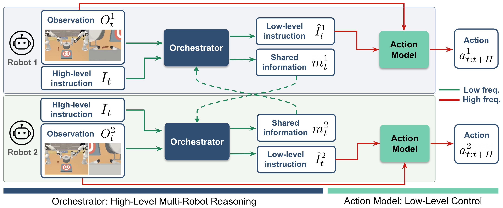
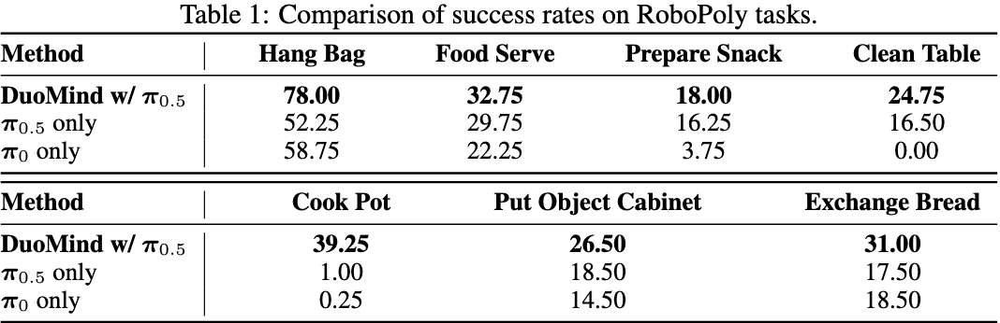
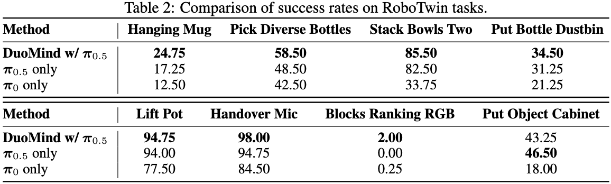
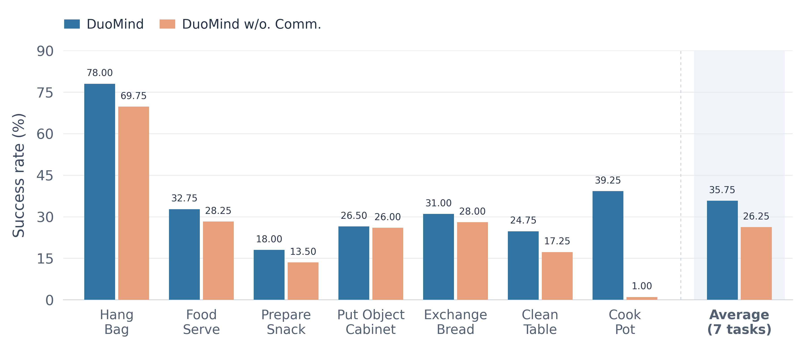
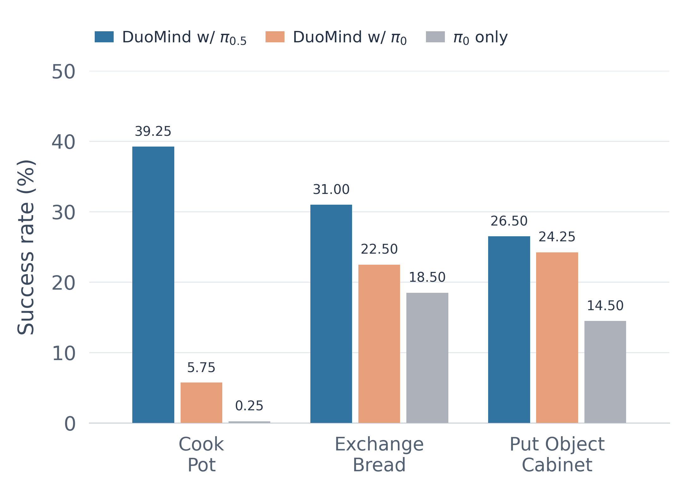

Observe and reason
Each robot combines the shared task, locally available views, and the latest peer message.
Distributed multi-robot coordination
Each independently controlled robot pairs a VLM orchestrator with a VLA action model and exchanges structured semantic messages to coordinate long-horizon manipulation.
Fifteen synchronized rollout views spanning RoboPoly and RoboTwin.
System overview
Two independently controlled robots each reason through an orchestrator, execute through an action model, and share semantic messages while acting in the same workspace.

Distributed hierarchy
Each robot separates high-level multi-agent reasoning from low-level continuous control. The evaluated system uses Qwen3-VL-4B-Instruct as the orchestrator and π0.5 as the primary action model.

Each robot combines the shared task, locally available views, and the latest peer message.
The orchestrator selects a short admissible instruction and prepares structured shared information.
The local VLA executes action chunks while the orchestrator updates its plan as the task evolves.
Inter-agent information sharing
Natural language is both the bridge from high-level reasoning to low-level control and the medium through which independently controlled robots share task-relevant context.
The paper also describes uncertainty as an optional belief-confidence signal. It is not shown as an implemented field here because the evaluated prompt in the current paper emits the three fields above.
Long-horizon benchmark
RoboPoly contains seven tasks designed around explicit cooperation. Each Panda robot receives the shared global view and its own wrist view, but not the peer's wrist view, and is controlled by a separate policy.
Complete staged preparation before jointly carrying the pot.
Hand off the bag and place it on the hook.
Perform two coordinated exchanges across workspaces.
Transfer bread across reach regions onto a tray.
Allocate four bread pieces across two plates.
Pass an unreachable cube and clear the workspace.
Open, place, and close through shared manipulation.
Synchronize both grasps, then lift and transport the pot together.
Adapted distributed-control tasks
Seven supplied rollouts show two Aloha-AgileX agents coordinating through handoffs, parallel actions, synchronized motion, and staged manipulation.
Quantitative evaluation
Over 400 evaluation rollouts per task, DuoMind with π0.5 matches or outperforms the action-model-only baselines across the seven long-horizon tasks.

Evaluation beyond RoboPoly
Eight RoboTwin dual-arm tasks are adapted to distributed control by treating the two Aloha-AgileX arms as independent agents with separate policies and observations.

Experimental analysis
Communication supports coordinated decisions, while the action-model study separates high-level orchestration gains from low-level controller strength.
Communication ablation
Peer messages provide information that cannot always be inferred from local observations, helping the orchestrators avoid conflicting targets and mistimed joint actions.

Cook Pot
Without communication, one robot may lift while the peer has only begun grasping its handle.
Prepare Snack
Both robots may choose the same plate and attempt to place bread there simultaneously.
These descriptions come from the paper. Matched no-communication footage was not supplied, so this page does not create a synthetic video comparison.
Component compatibility
Replacing π0.5 with π0 lowers absolute performance, but the orchestrated π0 system remains above the π0-only baseline on the three evaluated tasks.
